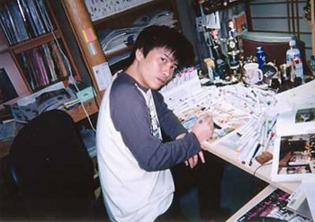
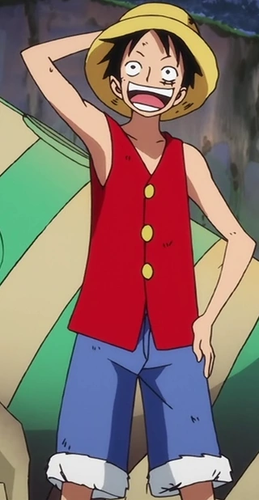

Brief introduction
One Piece is a Japanese manga series written and illustrated by Eiichiro Oda. The story follows the
adventures of Monkey D. Luffy, a boy whose body gained the properties of rubber after unintentionally eating
a Devil Fruit. With his pirate crew, the Straw Hat Pirates, Luffy explores the Grand Line in search of the
deceased King of the Pirates Gol D. Roger's ultimate treasure known as the "One Piece" in order to become
the next King of the Pirates.
One Piece has received praise for its storytelling, art, characterization, and humor. It has received many
awards and is ranked by critics, reviewers, and readers as one of the best manga of all time. Several
volumes of the manga have broken publishing records, including the highest initial print run of any book in
Japan. In 2015 and 2022, One Piece set the Guinness World Record for "the most copies published for the same
comic book series by a single author".


Above are two images of manga creator Eiichiro Oda in his early career.
As of August 2022, One Piece had over 516.5 million copies in circulation in 61 countries and regions
worldwide, making it the best-selling manga series in history, and the best-selling comic series printed in
book volume. It is also one of the highest-grossing media franchises of all time.
Main Characters
-
Monkey D. Luffy

Monkey D. Luffy, also known as "Straw Hat Luffy" and commonly as "Straw Hat", is the main
protagonist of the manga and anime, One Piece. He is the founder and captain of the increasingly
infamous and powerful Straw Hat Pirates, as well as one of its top fighters.He desires to find
the
legendary treasure left behind by the late Gol D. Roger and thereby become the Pirate King,
which
would help facilitate an unknown dream of his that he has told only to his brothers and crew.
He believes that being the Pirate King means having the most freedom in the world.
Born in Foosha Village, Luffy is the son of Monkey D. Dragon, the leader of the Revolutionary
Army,
and the grandson of the Marine hero Monkey D. Garp, and their family carries the initial and
Will of
D.Luffy met "Red-Haired" Shanks, who gave Luffy the very straw hat that has become Luffy's
signature
accessory, having gifted it to the boy as part of a promise for them to meet again someday after
he
became a great pirate.
-
Roronoa Zoro

Roronoa Zoro, also known as "Pirate Hunter" Zoro, is the combatant of the Straw Hat Pirates, one
of
their two swordsmen and one of the Senior Officers of the Straw Hat Grand Fleet. Formerly a
bounty
hunter, he is the second member of Luffy's crew and the first to join it. As a master of Three
Sword Style, a swordsmanship style which he created during his childhood
training in Shimotsuki Village, Zoro is among the three most powerful combatants of the Straw
Hats,
alongside Luffy and Sanji.
His dream is to become the greatest swordsman in the world, in order to honor a promise he made
to
his deceased childhood friend Kuina.
In addition to his infamy as one of the Straw Hats and as a former bounty hunter, Zoro is also
regarded as one of twelve pirates who are referred to as the "Worst Generation".
-
Nami

Nami is the navigator of the Straw Hat Pirates and one of the Senior Officers of the Straw Hat
Grand
Fleet. She is the third member of the crew and the second to join, doing so during the Orange
Town
Arc. She is the adoptive sister of Nojiko after the two were orphaned and taken in by Bell-mère.
She was formerly a member of the Arlong Pirates and initially joined the Straw Hats so that she
could rob them in order to buy back her village from Arlong. However, she legitimately joined
the
Straw Hats after they rebelled against and defeated Arlong. Her dream is to make a map of the
entire
world.
-
Usopp

Usopp is the sniper of the Straw Hat Pirates and one of the Senior Officers of the Straw Hat
Grand
Fleet. He is the fourth member of the crew and the third to join, doing so at the end of the
Syrup
Village Arc. Although he left the crew during the Water 7 Arc, he rejoined at the end of the
Post-Enies Lobby Arc. Usopp is the son of Yasopp and Banchina. He was born and raised in Syrup
Village, serving as
"captain" of the Usopp Pirates and being Kaya's close friend. After working with the Straw Hats
to
defeat Kuro and the Black Cat Pirates, he was invited to join the crew. Despite his usual
cowardice,
Usopp dreams of becoming a brave warrior of the sea just like his father and lives every day in
pursuit of living up to this dream.
-
Sanji

Sanji, born as Vinsmoke Sanji, is the cook of the Straw Hat Pirates and one of the Senior
Officers
of the Straw Hat Grand Fleet. He is the fifth member of the crew and the fourth to join, doing
so at
the end of the Baratie Arc. Born as the third son and fourth child of the Vinsmoke Family (Thus,
making him a former prince of
the Germa Kingdom), he disowned his family twice, once in his youth and again after reuniting
with
them as an adult. After fleeing the Vinsmokes as a child, he eventually entered the care of Zeff
as
the sous chef of the Baratie, where he would remain until he met Monkey D. Luffy, who convinced
him
to join his crew.
-
Tony Tony Chopper

Chopper, also known as "Cotton Candy Lover" Chopper, is the doctor of the Straw Hat Pirates and
one
of the Senior Officers of the Straw Hat Grand Fleet. He is the sixth member of the crew and the
fifth to join, doing so at the end of the Drum Island Arc. He was temporarily forced to join the
Foxy Pirates during the Long Ring Long Land Arc, but was quickly returned to Luffy's crew.
Chopper is a reindeer that ate the Hito Hito no Mi, a Devil Fruit that allows its user to
transform
into a human hybrid or a human at will. He came from Drum Island and was taught how to be a
doctor
by his two parental figures, Doctors Hiriluk and Kureha. His dream is to one day become a doctor
capable of curing any disease and wants to travel all across the world specifically in the hopes
of
accomplishing this dream.
-
Nico Robin

Nico Robin, also known by her epithet "Devil Child" and the "Light of the Revolution", is the
archaeologist of the Straw Hat Pirates and one of the Senior Officers of the Straw Hat Grand
Fleet.
She is the seventh member of the crew and the sixth to join, doing so at the end of the Alabasta
Arc. She temporarily left the crew during the Water 7 Arc but rejoined during the Enies Lobby
Arc. Robin eat the Hana Hana no Mi at a young age, giving her the power to reproduce her body
parts (or
her entire body) on any surface at will. As the sole survivor of the destroyed West Blue island
Ohara, she is currently one of only two people in the world known to have the ability to read
and
decipher Poneglyphs, a skill which is considered forbidden and threatening to the World
Government.
-
Brook

"Soul King" Brook is the musician of the Straw Hat Pirates, one of their two swordsmen and one
of
the Senior Officers of the Straw Hat Grand Fleet. He is the ninth member of the crew and the
eighth
to join, doing so at the end of the Thriller Bark Arc. Brook eat the Yomi Yomi no Mi, which
allowed him to return to life after death once. Brook
eventually learned to tap deeper into the powers of his Devil Fruit, giving him significant
control
over his own soul and the souls of others. Originally a member of the Rumbar Pirates, he died
and was resurrected through the power of the Yomi
Yomi no Mi. However, due to the amount of time it took for his soul to find his body, it was
reduced
to a skeleton, keeping only his afro intact. Brook drifted alone in the Florian Triangle for 50
years, eventually meeting Luffy and serving as the Straw Hats' ally during the Thriller Bark Arc
before officially joining the crew. His dream is to reunite with his old friend, Laboon, at
Reverse
Mountain, where he resides with Crocus.
-
Franky

"Iron Man" Franky is the shipwright of the Straw Hat Pirates and one of the Senior Officers of
the
Straw Hat Grand Fleet. He is the crew's eighth member and the seventh to join, doing so at the
end
of the Post-Enies Lobby Arc. Born "Cutty Flam", he chose to go by his nickname of "Franky" until
eventually permanently
discarding his true name per the request of Iceburg to hide his identity. Originally from the
South
Blue, Franky was abandoned by his family as a four-year-old eventually making his way to Water
7.
There, he came to be a member of Tom's Workers, until an incident resulted in his body being
heavily
damaged and requiring him to augment himself into a cyborg. Upon returning to Water 7, he became
the
leader of the Franky Family, a group of ship dismantlers and bounty hunters. Franky and his
followers were originally enemies of the Straw Hats at the beginning of the Water 7
Arc, until circumstances forced them to become allies at the end of the same arc and the Enies
Lobby
Arc. Franky's dream is to create a ship and circumnavigate the world with it, and he built the
Thousand Sunny and joined the Straw Hat Pirates to fulfill his dream.
-
Jinbe

"Knight of the Sea" Jinbe is the helmsman of the Straw Hat Pirates and one of the Senior
Officers of
the Straw Hat Grand Fleet. He is the tenth member of the crew and the ninth to join, doing so
during
the Wano Country Arc. Jinbe is a whale shark fish-man and a powerful master of Fish-Man Karate.
His dream is to fulfill
his former captain Fisher Tiger's dying wish of coexistence and equality between humans and
fish-men. He was a member of the Sun Pirates, eventually becoming its second captain after the
death
of their original captain, Tiger. He eventually became one of the Seven Warlords of the Sea,
though
he resigned during the Summit War of Marineford. Prior to and amidst said war, Jinbe befriended
Monkey D. Luffy, and two years later allied with him
and his crew to prevent the New Fish-Man Pirates' coup d'état against the Ryugu Kingdom's
Neptune
Royal Family. Luffy thereafter invited him to join the Straw Hat Pirates, but Jinbe held it off
until severing ties with Big Mom during the Whole Cake Island Arc. After staying behind in Totto
Land to protect the Sun Pirates from Big Mom's wrath, Jinbe returned to the Straw Hats during
the
Wano Country Arc, officially announcing his status as a member of the crew.
Devil Fruit
Devil Fruits are mysterious, distinctive fruits scattered throughout the world, known for permanently
granting their eaters superhuman powers and an equally permanent inability to swim. With only one notable
exception, an individual can only acquire the powers of a single Devil Fruit and survive.
As a whole, Devil Fruits encompass hundreds of different powers, from the (apparently) mundane to the
inherently mass-destructive. These fruits are broadly grouped into three classes: Zoan, which allows a user
to transform into an animal as well as an animal hybrid; Logia, which grants a user the power to create,
control, and transform their body into a natural element; and Paramecia, which offers any of a vast array of
strange abilities that do not fit into the other two categories.
Paramecia
The most common of the three Devil Fruit types, Paramecia-type Devil Fruits grant their users any one of a
wide variety of superhuman powers; these powers include things like shock wave generation and locking onto
targets. Paramecia Fruits can alter features of the user's body, granting them a slippery physique, a body
of blades, or the ability to split their own body into pieces harmlessly. Some Paramecia Fruits allow the
user to modify the people, objects, and environment around them by making things levitate or turning people
into toys. Finally, some fruits exist that allow users to generate and manipulate substances, like wax or
poison.
The defining characteristic of Paramecia fruits is that the abilities they grant are anything other than the
ability to transform into animals or change their body into natural elements like the fruits of the other
two categories.
-
Gomu Gomu no Mi
-
The Gomu Gomu no Mi is a Paramecia-type Devil Frui that grants the user's body the properties of
rubber, effectively turning them into a Rubber Human.
-

-
Bara Bara no Mi
-
The Bara Bara no Mi is a Paramecia-type Devil Fruit that allows the user to split their own body into
pieces and control said pieces however they wish, as well as making the user immune to slashing attacks,
making the user a Splitting Human.
-

-
Sube Sube no Mi
-
The Sube Sube no Mi is a Paramecia-type Devil Fruit that makes the user's body smooth and slippery,
which in turn makes most attacks and objects slide off their body, protecting the user from harm in most
situations.
-

Zoan
The users of Zoan-type Devil Fruits gain the ability to transform into a specific animal, as well as
transform into a hybrid form that combines attributes of their own species and the species the fruit allows
them to transform into. Unlike other Devil Fruits, Zoan-type fruits are said to have a will of their own. A
recently discovered science allows Zoan Fruits to be integrated into inanimate objects, bringing the object
to life and granting it the standard Zoan transformations.
Zoan fruits greatly enhance the users physical abilities and are the best kind of power for augmenting melee
combat. Carnivorous animal Zoans are better suited for combat due to their predatory attributes. Some Zoan
even grant special abilities based on the animal, such as the king cobra Zoan allowing the user to spit
globs of poison, or the mole Zoan allowing the user to dig through the earth, even through solid stone, at
high speed.
Aside from most Zoans that transform their users into animals that currently exist, there are three known
sub-classifications:
-
Ancient - Zoan Fruits that allow the user to transform into an
extinct species, such as dinosaurs.
Ancient Zoans are rare, and they appear to be stronger than regular Zoans. Some have even displayed
atypical physical abilities that their users claim the real animals naturally possess.
-
Mythical - Zoan Fruits that allow the user to transform into
mythological creatures, such as a dragon or a phoenix. Mythical Zoan animals tend to have additional
special powers, like a phoenix Zoan being able to generate flames that have healing powers. Mythical
Zoans are the rarest type of Devil Fruit, even more so than Logias.
-
Artificial - Artificially created Zoan Fruits that cause the user
to permanently take on an animal characteristic; though, much more rarely, the user becomes able to
transform at will. The artificial Zoan Fruits had a 10% success rate, while the other 90%, in
addition to not gaining animal traits and losing the ability to swim, were stripped of the ability
to express negative emotions, leaving them only able to smile and laugh, regardless of how they
actually feel. These artificial Devil Fruits, known as SMILEs, were developed by Caesar Clown and
Donquixote Doflamingo. Another version was developed by Vegapunk
-
Ushi Ushi no Mi
-
The Ushi Ushi no Mi, Model: Bison is a Zoan-type Devil Fruit that allows its user to transform into a
full bison or a half-bison hybrid at will. It was eaten by Dalton.
-

-
Smiles
-
SMILEs are artificial Zoan Devil Fruits created with SAD. They were formerly manufactured by Donquixote
Doflamingo and Caesar Clown and were monopolized and consumed by the members of the Beasts Pirates,
which created the classifications of the Gifters, Pleasures, and Waiters within the crew.
SMILEs do not have individual names like the standard Devil Fruits, and are instead referred to as
"(Animal species) no SMILE". In the English subtitles, they are referred to as "(Animal species) SMILE".
-

-
Inu Inu no Mi
-
The Inu Inu no Mi, Model: Okuchi no Makami is a Mythical Zoan-type Devil Fruit that allows the user to
transform into a hybrid and full version of an ancient wolf deity at will. It was accidentally eaten by
Yamato.
As noted by Kaidou, said wolf is the "Guardian Deity of Wano", making this Zoan particularly valuable.
Its power was first hinted at during Yamato's confrontation with the Armored Division when Yamato
briefly flashed his fangs, before its power was properly introduced in Yamato's later fight with Kaidou
on the Skull Dome's roof.
-

Logia
The rarest and most powerful of the three Devil Fruit types, Logia-type Devil Fruits allow their users to
create, control, and transform their body into a natural element, such as sand, mud, smoke, lightning, plant
life, and even darkness. There are also Logias that can transform the user into artificial elements like
paper or candy syrup, but these are considered non-canon.
The elemental transformation effectively makes the user intangible, as well as allowing the user to remain
in control of their body, even when it is broken into pieces. They also gain every ability related to that
element, such as sand being able to absorb moisture or light being able to travel at light speed. The
darkness element and its power of all consuming absorption has the unique ability to nullify any other Devil
Fruit power upon contact with the user. Some Logia Devil Fruits even grant the user an infinite amount of
space inside their elemental body.
-
Mera Mera no Mi
-
The Mera Mera no Min is a Logia-type Devil Fruit that allows the user to create, control, and transform
into fire at will. It was eaten by Sabo, and previously by Portgas D. Ace.
-

-
Moku Moku no Mi
-
The Moku Moku no Mi is a Logia-type Devil Fruit that allows the user to create, control, and transform
into smoke at will. It was eaten by Smoker.
-

-
Yami Yami no Mi
-
The Yami Yami no Mi is a Logia-type Devil Fruit that allows the user to create and control darkness at
will, making the user a Darkness Human . It was eaten by Marshall D. Teach, also known as Blackbeard,
who stole it from Commander Thatch of the Whitebeard Pirates' 4th division after murdering him.
This fruit is considered "unique" even for a Logia-type, and the ability it grants is said to be the
"most evil".
-

Marines
The Marines are the World Government's military sea force, tasked with law enforcement, international
security and military operations. They maintain a presence on all of the world's known seas, through
countless branch offices; however, the vast majority of their assets are focused solely on the Grand Line,
in which resides their main base of operations, Marine Headquarters. Collectively, they stand as one of the
Three Great Powers, alongside the Four Emperors and the Seven Warlords of the Sea, who were later replaced
by the SSG.

Due to their actions and role, they are one of the main antagonist groups of the series overall. They are
the main antagonists of the Romance Dawn, Loguetown, Enies Lobby, Sabaody Archipelago, Marineford, and
Return to Sabaody Arcs. They are also antagonists in various non-canon material, such as the Warship Island,
Goat Island, G-8 and Marine Rookie filler Arcs, the fifth and eleventh movies, and the third, sixth and
tenth specials.
Duties
The duty of the Marines is to maintain a law and order throughout the world and impose the will and might of
the World Government. The main purpose of the Marines is bringing any criminal to justice, with a particular
focus on capturing pirates. They use justice as their constituted policy to manage a world that is made
almost entirely of ocean much easier. They are generally divided between those who support Absolute Justice
and those who support (generally more lax) personal justices, with the former being the code of conduct for
the Marines as a central doctrine.
Amongst their duties is awarding bounty hunters the bounties for the head of a criminal. They tolerate
bounty hunters as a method of making their jobs easier, but are known to go out bounty hunting themselves.
Apprehended criminals who are brought in alive are handed over to be made an example of. The Marines are
left to ensure the transportation of these criminals to prison and/or to their execution.

The Marines executing a captured pirate.
Some Characters
Sakazuki "Akainu the Fleet Admiral"

Sakazuki,formerly known by his admiral alias Akainu,is the current fleet admiral of the Marines,
succeeding the previous fleet admiral, Sengoku. During the first half of the series, he was one of the
three admirals, as the last one to debut. Upon becoming the fleet admiral, one of Sakazuki's first
decisions was to relocate Marine Headquarters into the New World in preparation for the New Pirate Age.
In the manga, Akainu was first mentioned by Nico Robin during the initial encounter with Aokiji. In the
anime, he was mentioned earlier by vice admiral Jonathan during the anime-only G-8 Arc, which aired
after Akainu had been revealed in the manga.
Borsalino "Admiral
Kizaru"

Borsalino, more commonly known by his alias Kizaru, is an admiral in the Marines. After Aokiji resigned
from the Marines and Akainu was promoted to fleet admiral, Kizaru is now the only remaining admiral from
the previous trio.
He was first mentioned by Nico Robin during the Straw Hats' initial encounter with Aokiji. Because of
his actions, Kizaru can be considered the secondary antagonist of the Sabaody Archipelago Arc, one of
the major antagonists of the Marineford Arc, and a supporting antagonist of the Egghead Arc.
Monkey D. Garp

Monkey D. Garp is an extremely famous and powerful Marine vice admiral. He is the father of Monkey D.
Dragon, the paternal grandfather of Monkey D. Luffy, and the adoptive grandfather of Portgas D. Ace. He
was responsible for overseeing Ace's birth and raising a young Luffy, before entrusting them both to the
Dadan Family.
Garp is one of the major figures, along with Kong, Sengoku, Shiki, Silvers Rayleigh, Tsuru and
Whitebeard, from the times when Gol D. Roger, the "Pirate King", was still alive. His feats as a Marine
soldier were met with immense notoriety and prestige, with his actions during the God Valley Incident in
particular bestowing him the title of Hero of the Marines. Notably, Garp was offered the rank of Admiral
several times throughout his career, but he refused the offer of promotion every time.
Captain Koby

Koby the Hero is a Marine Captain who trained together with Helmeppo under Vice Admiral Garp's
supervision. He is currently a member of the Marine special forces unit SWORD.
He was formerly an involuntary pirate ship caretaker for the Alvida Pirates until he was liberated by
Luffy, being the first person Luffy befriended on his travels. He reunited with Luffy during the
Post-Enies Lobby Arc, after becoming a fully-fledged Marine soldier. During the timeskip, Koby earned
fame as a hero for his actions through the Rocky Port Incident. He is currently a prisoner of the
Blackbeard Pirates after a failed-yet-weakly attempt to arrest Boa Hancock.
He is Luffy's ally during the Romance Dawn Arc. He and Helmeppo are the central characters from the
Diary of Koby-Meppo Cover Page Serial and supporting antagonists of the Post-Enies Lobby Arc. Koby is
also a brief antagonist in the Marineford Arc.
Smoker

Smoker the White Hunter is a Marine officer and the Commander of the G-5 Marine Base, following the
treason of his former superior Vergo. He was first introduced as a captain in Loguetown, where he made
it his mission to capture Luffy, and was later promoted to the rank of commodore, due to the events in
Arabasta. At some point during the timeskip, he was promoted to the rank of vice admiral.Since his
debut, he has been the superior of Tashigi, serving as her mentor as well.
He is a recurring adversary of Luffy. Due to his actions against Luffy at Loguetown, Smoker can be
considered as the primary antagonist of the Loguetown Arc, and acts as a minor antagonist during the
Marineford Arc. Despite his rivalry with Luffy, they ended up helping each other during the Arabasta
Arc, and forming a temporary alliance during the Punk Hazard Arc, and the movie One Piece: Stampede.
These temporary alliances only last long enough for the two groups to defeat their common enemies. As it
typically goes between pirates and the Marines, they go back to being enemies again as soon as their
common enemy is defeated in each of these story arcs.
Helmeppo

Lieutenant Commander Helmeppo is a Marine officer and the son of ex-Marine Captain "Axe-Hand" Morgan.
Once a civilian who shamelessly exploited his father's status, he (together with Koby) underwent
extensive training under Vice-Admiral Garp to become a full-fledged serviceman, currently holding the
rank of lieutenant commander. He is also a member of the secret group known as SWORD.
Due to his actions during his initial appearance, he can be considered a supporting antagonist of the
Romance Dawn Arc. He and Koby are also the protagonists of Diary of Koby-Meppo Cover Page Serial.
Pirates
A pirate is, broadly speaking, any professional criminal that operates wholly or partially on the world's
seas, especially people conducting robbery by ship. In most, if not all, cases they lead or belong to a
group of like-minded criminals, known as a crew.
Though not the only existing type of criminal, pirates appear to comprise most of the world's significant
bounty heads, and with the possible exception of the Revolutionary Army constitute the strongest opposition
to the authority of the World Government and Marines.

Red Hair Pirates
In the world of One Piece, perhaps the trait most universal to pirates, beside their sea-going activities and
general defiance of the law, is the jolly roger: a skull-and-crossbones symbol meant for intimidation,
usually flown on black flags at the top of the ships mast, as well as on the sails. The Jolly Roger has
countless variants, every pirate group using their own unique design elements. The overall connotations of
such a symbol is strong enough that the Marines have been known to attack ships flying it on sight, even if
those onboard are not identified with any particular bounty or crime.
Virtually all pirates exist as part of a pirate crew, comprising of other pirates willing to operate under
the same Jolly Roger. A crew is typically led by a single Captain, who makes (or at least has final
authority on) all major actions taken by the crew. The Captain often possesses the highest combat ability
and notoriety out of anyone in the crew.
Four Emperors